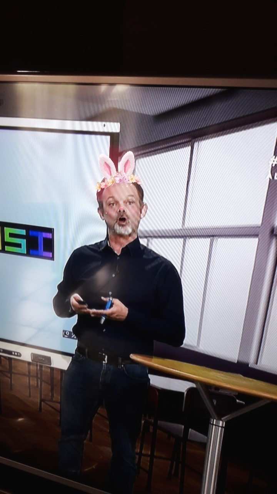

Préambule
L’enseignement de spécialité de numérique et sciences informatiques du cycle terminal de la voie générale vise l’appropriation des fondements de l’informatique pour préparer les élèves à une poursuite d’études dans l’enseignement supérieur, en les formant à la pratique d’une démarche scientifique et en développant leur appétence pour des activités de recherche.
L’objectif de cet enseignement, non professionnalisant, est l’appropriation des concepts et des méthodes qui fondent l’informatique, dans ses dimensions scientifiques et techniques. Cet enseignement s’appuie sur l’universalité de quatre concepts fondamentaux et la variété de leurs interactions :
- Les données, qui représentent sous une forme numérique unifiée des informations très diverses : textes, images, sons, mesures physiques, sommes d’argent, etc.
- Les algorithmes, qui spécifient de façon abstraite et précise des traitements à effectuer sur les données à partir d’opérations élémentaires.
- Les langages, qui permettent de traduire les algorithmes abstraits en programmes textuels ou graphiques de façon à ce qu’ils soient exécutables par les machines.
- Les machines, et leurs systèmes d’exploitation, qui permettent d’exécuter des programmes en enchaînant un grand nombre d’instructions simples, assurant la persistance des données par leur stockage, et de gérer les communications. On y inclut les objets connectés et les réseaux.
yo man
